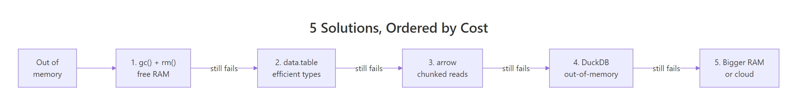

R Memory Error: 'cannot allocate vector' — 5 Solutions From Quick to Complete
Error: cannot allocate vector of size X Gb means R tried to grow or copy an object that needs more contiguous RAM than your machine can spare in this session. The size printed in the message is exactly how much R asked for — that single number decides which of the five fixes below applies to you.
What does "cannot allocate vector of size X Gb" actually mean?
When you see this error, R hit a hard wall: it asked the operating system for a chunk of contiguous memory and the OS said no. The size in the message is the exact request — not your total memory use, not the size of everything in your session. Before touching any fix, reproduce the error and read that number carefully. It tells you whether you are 100MB short or 40GB short, and the answer points directly at the right solution.
The two parts of the message to notice: cannot allocate vector means the request failed at allocation time (not during computation), and 74.5 Gb is the exact size that was refused. A 10-billion-element double vector needs 10e9 * 8 bytes ≈ 74.5 GiB — the number is not a mystery, it is arithmetic.
Once you have the number, estimate how big your actual objects are so you know how much headroom to recover. Base R's object.size() reports the exact byte count for any variable you already have in the session.
So a 5-million double vector is about 38MB. Doubling the length roughly doubles the memory. Multiply by the number of similar objects you plan to hold at once, and you have a rough budget. If the budget already exceeds free RAM, you know the error is unavoidable with the current approach and need to jump straight to solutions 2–5.
R ships a second tool to read memory state: gc(), which triggers a garbage-collection pass and prints a before/after table.
Two numbers matter here: Vcells used (Mb) is how much R is holding right now for vectors (your data), and max used is the highest it has been during this session. If max used is close to your total RAM and used is much lower, old objects were freed and you just need to trigger a collection — that is exactly what solution 1 does.
Try it: Estimate how many megabytes a 10-million-element numeric vector needs. Write the expression using object.size() and convert to MB.
Click to reveal solution
Explanation: 10 million doubles × 8 bytes each ≈ 80MB. object.size() reports the exact byte count and format(..., units = "MB") converts it to a readable string.
Solution 1: Can gc() and rm() buy you enough headroom?
This is the zero-cost first move. Every interactive R session accumulates old objects, copies from pipelines, and intermediate results that you no longer need. If the shortage is modest — say the error is for 500MB and you have 4GB free — removing leftovers and triggering garbage collection often fixes it instantly.
Read the gc() output after rm(): the used column drops back to what is actually live, and max used still remembers the peak. The 500MB object is gone from used but not from max used — that is normal and tells you the OS has now released the memory. Try your failing line again: if it was a small overage, it will succeed.
If you are inside a long loop that builds intermediate objects, sprinkle rm() and gc() between iterations so each pass does not carry its predecessors' memory forward.
gc() at the end of each iteration guarantees the memory is released before the next iteration tries to allocate.A full session wipe is also one line — useful as a panic button at the top of a script that keeps failing.
When solution 1 works: the overage is small (under ~1GB), your session has been running a while, or you just finished an expensive pipeline that left copies lying around. When it does not: the single object you need is already larger than free RAM. No amount of clean-up will help — jump to solution 2.
Try it: Create a 200MB numeric vector named ex_big, confirm its size, delete it, and verify with gc() that memory dropped.
Click to reveal solution
Explanation: numeric(2.5e7) allocates 25 million doubles ≈ 190MB. rm() removes the binding; gc() forces R to release the memory back to the OS (or at least mark it reusable).
Solution 2: How do you read CSVs with less memory using data.table?
The most common place the error appears is on a read.csv() call against a file that is 1–5 GB on disk. Base R's reader has three memory penalties: it converts strings to factors (doubling some columns), it keeps row names, and its parser uses temporary buffers that spike peak memory well above the final data frame size. The fix is to swap in data.table::fread(), which uses a fraction of the peak RAM and runs ~10× faster on the same file.
So we have a ~3MB CSV with 100,000 rows. Now load it both ways and compare memory footprints.
On the same file, fread() holds the data in about a third of the RAM. The win compounds with file size: a 2GB CSV that peaks at ~12GB under read.csv() often peaks under 4GB with fread(). For files that are close to your memory limit, that one swap is enough to turn a failing script into a passing one.
The second win is column selection. If you only need three columns out of thirty, fread() can skip reading the rest entirely — memory use drops roughly proportional to the column count.
Two columns instead of four cut memory by more than half. For a real-world 30-column file where you only need 5 columns, that is a 6× reduction before any other trick.
Try it: Write mtcars to a temp CSV, then use fread() with select= to load only the mpg, cyl, and hp columns.
Click to reveal solution
Explanation: fread() parses only the requested columns off the disk, skipping the other eight entirely. This is the cheapest way to load a wide file with lots of unneeded columns.
Solution 3: How does arrow read files larger than RAM?
fread() still loads the whole file into memory. If the file itself is larger than your RAM — a 40GB parquet file on a 16GB laptop — you need a different approach. The arrow package lets you reference an on-disk file without loading it, filter rows and columns using dplyr verbs, and only materialise the final (small) result in R's memory.
The magic word is collect(). Every dplyr verb before it (filter, select, mutate, group_by, summarise) is recorded but not executed. collect() pushes the whole pipeline down to the Arrow query engine, which streams the file in chunks, applies the filter as it reads, and hands R only the rows that survived. A 40GB file filtered down to 2 million matching rows becomes a ~50MB data frame — problem solved without ever loading the full 40GB.
This works best when three conditions hold: (1) the file is in parquet or arrow format (columnar, so column selection is cheap), (2) your filter knocks out most rows, and (3) the result you actually want is small. If the answer is still 30GB, arrow alone will not save you — but solution 4 might.
Try it: Write mtcars to a temporary parquet file, open it as a dataset, and filter to rows where mpg > 20 without calling collect() until the very end.
Click to reveal solution
Explanation: open_dataset() returns a reference, not the data. filter() and select() stack up a lazy plan. collect() executes the plan, streams only the matching rows into R, and returns a tibble.
Solution 4: How can DuckDB query data that doesn't fit in memory?
DuckDB is an in-process analytical SQL engine — think SQLite, but optimised for columnar analytics. From R, you can point it at a CSV or parquet file on disk, run a SQL query (or dplyr pipeline through dbplyr), and only the query result comes back to R. Because DuckDB processes data in streaming chunks, the input file can be many times larger than your RAM.
Three rows came back to R. The CSV could have been 40GB; R never sees anything except those three rows plus the scalar summaries. DuckDB did all the scanning, filtering, and aggregation outside R's memory space. This is the single most important pattern for "the input is huge but my final answer is small" workloads — which covers most real analytics.
If you prefer dplyr syntax, DuckDB also works via dbplyr: tbl(con, "read_csv_auto('big-mtcars.csv')") gives you a lazy table you can pipe through filter, group_by, summarise, and finally collect(), identically to the arrow example.
Try it: Without writing code, answer this conceptually: for a query like SELECT AVG(mpg) FROM mtcars.csv GROUP BY cyl, which rows would ever need to be held in R's memory?
Click to reveal solution
Answer: Only the result rows — one per distinct cyl value. For mtcars that is 3 rows (4-cyl, 6-cyl, 8-cyl), each with the average mpg. None of the 32 original rows ever enter R's memory, and the same logic scales: a 40GB CSV with 5 distinct groups returns 5 rows to R regardless of input size. DuckDB streams the input file through its aggregation operator and emits only the final group summaries.
Solution 5: When is more RAM or cloud the right answer?
Sometimes there is no clever trick. If the single object you need is larger than your machine can hold — say a 30GB correlation matrix, or a model that must see all training rows at once — solutions 1 through 4 cannot save you. At that point the right answer is more hardware, and it is usually cheaper than the time you would spend fighting it.
The pragmatic order is: upgrade the laptop, rent a VM by the hour, or use a hosted R service with larger instances. Renting is almost always the first thing to try. A 128GB-RAM cloud VM costs about $1–2 per hour on EC2, GCP, or Azure — one afternoon of compute is cheaper than a new laptop and lets you finish the job today instead of next week.
Signals that you are in solution-5 territory:
- The error shows a size larger than your total RAM, not just free RAM.
- You already tried
fread,arrow::open_dataset, and DuckDB — none helped because the output is also huge. - You need a global operation: a full pairwise distance matrix, a correlation matrix over 100k columns, or a dense model fit on all rows at once.
- The dataset is growing and this will not be a one-time problem.
If none of those apply, you probably do not need more hardware yet — recheck whether solutions 2–4 can restructure the problem.
Try it: You have a 40GB CSV on an 8GB-RAM laptop. Which of solutions 1–5 are realistic? Which are not?
Click to reveal solution
Realistic: Solution 3 (arrow with open_dataset() + filter/collect), solution 4 (DuckDB SQL aggregation), and solution 5 (rent a cloud VM) all handle this. Arrow and DuckDB only need the final result in memory, not the input.
Not realistic: Solution 1 (gc() + rm()) cannot create memory you do not have. Solution 2 (fread()) still tries to load the whole file into RAM — a 40GB CSV will not fit in 8GB regardless of the reader. You must avoid loading the full file, which is exactly what solutions 3–5 do.
Practice Exercises
Exercise 1: Diagnose and triage a memory error
You just hit Error: cannot allocate vector of size 1.8 Gb inside a script. Write a short diagnostic block that (a) lists the current top-3 largest objects in the global environment by size, (b) runs gc(), and (c) saves those three biggest objects' names to my_biggest.
Click to reveal solution
Explanation: sapply(ls(), ...) computes the byte size of every object in the global environment. Sorting descending and taking the top 3 gives you the biggest memory holders — the prime candidates to rm() first.
Exercise 2: Out-of-memory aggregation with fread + select
Simulate a 1-million-row data frame with columns id, group, value, and description, write it to a temp CSV, then use fread() with select= to load only group and value, and compute the mean value by group. Save the result to my_summary.
Click to reveal solution
Explanation: The description column is the largest per row but you never need it for the aggregation. fread(..., select=) skips it entirely. The aggregation then runs on a much smaller in-memory table.
Complete Example: Full Triage Script
Here is the workflow you should reach for whenever a script hits the error — reproduce the failure small, apply the cheapest fixes first, then escalate only if needed. Every step is runnable as-is.
Read the before/after gc() tables: the used (Mb) numbers hardly changed, because we dropped the unneeded junk column at load time and cleaned up with rm() afterwards. This is the pattern — measure, reduce at the boundary (load only what you need), compute, clean up. On a full-sized file, every step still applies; only the numbers get bigger.
Summary

Figure 1: Five solutions ordered from zero-cost to most-expensive — try them in order.
| # | Solution | Cost | When to use | Package |
|---|---|---|---|---|
| 1 | gc() + rm() |
Free | Small overage, long session | base R |
| 2 | fread() + select= |
Free | Wide CSV, many unneeded columns | data.table |
| 3 | open_dataset() + filter + collect() |
Free | File > RAM, result is small | arrow |
| 4 | DuckDB SQL on disk files | Free | Aggregations/joins on huge inputs | duckdb |
| 5 | Cloud VM / bigger laptop | $1–2/hr | Single object > RAM, no reduction possible | — |
Read the error size first, then start at solution 1 and walk down the table until one of them fits. Most real-world cases stop at solution 2 or 3.
References
- R Core Team —
?Memory-limitshelp page. Link - data.table —
freadreference. Link - Apache Arrow — R package,
open_dataset(). Link - DuckDB — R API documentation. Link
- Wickham, H. — Advanced R, 2nd Edition — Names and values chapter. Link
- CRAN R FAQ — memory management. Link
- CRAN —
bigmemorypackage for shared-memory matrices. Link
Continue Learning
- 50 R Errors Decoded: Plain-English Explanations and Exact Fixes — the parent index of common R errors with fast cross-references.
- Measuring R Memory Use with lobstr — precise per-object memory accounting beyond
object.size(), useful when triaging large pipelines. - data.table vs dplyr: When to Use Each — side-by-side comparison of the two main data-manipulation engines, including their memory characteristics.